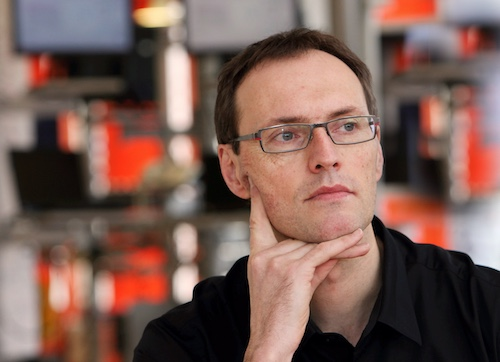
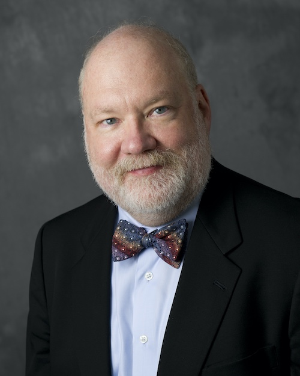
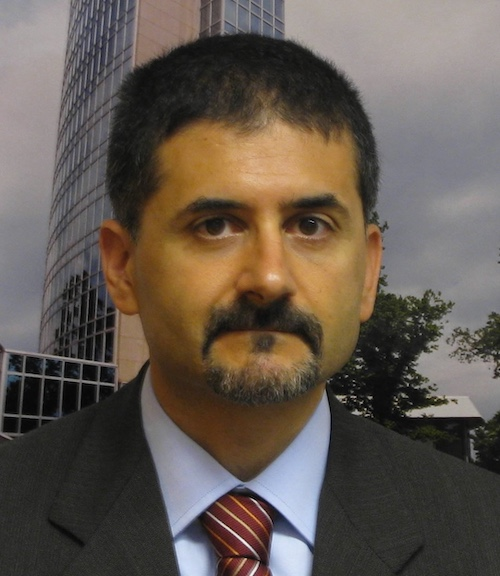

32nd International Conference on
ICT Systems Security and Privacy Protection - IFIP SEC 2017
May 29 - 31, 2017, Rome, Italy
|
32nd International Conference on
ICT Systems Security and Privacy Protection - IFIP SEC 2017
May 29 - 31, 2017, Rome, Italy
|
|
Keynote SpeakersJan Camenisch: Cryptography for People

Jan Camenisch is a Principal Research Staff Member at IBM Research - Zurich.
He has received his Ph.D. from ETH Zurich in 1998. Research Assistant Professor in Computer Science at the University of Aarhus, Denmark from 1998-99.
Since 1999, Dr. Camenisch has been a Research Staff Member at the IBM Zurich Research Laboratory. He published over 130 refereed papers in this area,
was a chair of a few and a member of numerous scientific program committees, and currently holds about 120 patents. Jan is an IEEE and an IACR Fellow
and has received several awards for this work on privacy-enhancing technologies including the 2013 IEEE Computer Society Technical Award and the 2010
ACM SIGSAC Outstanding Innovation Award. His interests include cryptographic protocols, in particular those supporting privacy and anonymity, and practical
secure distributed computation.
Abstract. With the increasing use of digital media for our daily tasks, our privacy is eroding at a fast pace. In this talk we are argue that this is not only a privacy issue but as well a security problem. We show that lots of technologies exist that would protect our data well if only they were used. We give a couple of examples of such technologies and explain them. We finally discuss research and other challenges that still need to be overcome to a realise a more secure and privacy-preserving digital world. Kristian Beckman AwardEugene H. Spafford: Reflections on the state of cyber security

Eugene H. Spafford is a professor of Computer Sciences at Purdue University. He is also the founder and
Executive Director Emeritus of the Center for Education and Research in Information Assurance and Security. He has been working in computing as a student, researcher,
consultant and professor for over 40 years. Some of his work is at the foundation of current security practice, including intrusion detection, firewalls, and whitelisting.
His most recent work has been in cyber security policy, forensics, and future threats. Professor Spafford is a Fellow of the AAAS, ACM, IEEE, (ISC)2, a Distinguished Fellow
of the ISSA, and a member of the Cyber Security Hall of Fame -- the only person to ever hold all these distinctions. In 2012 he was named as one of Purdue's inaugural Morrill
Professors -- the university's highest award for the combination of scholarship, teaching, and service. In 2004, Spaf was named as the recipient of the IEEE Computer Society's Taylor
Booth medal, and of the ACM SIGCAS's "Making a Difference" award. In 2005 he was named as a recipient of the IEEE Computer Society's Technical Achievement Award. In 2006, he received
the ACM SIGSAC's "Outstanding Contribution" award, and in 2007 he was named as the recipient of the prestigious ACM President's Award. In 2008, he was cited as the recipient of CRA's
Distinguished Service Award, and in 2011 was awarded a SANS Lifetime Achievement Award. In 2013 he was named as the recipient of the (ISC)2 Harold F. Tipton Lifetime Achievement Award.
Among many other activities he is the immediate past-chair of the Public Policy Council of ACM (USACM), and is editor-in-chief of the journal Computers & Security.
Abstract. The nature of what we now call “cyber security” has changed considerably over the last few decades … as has computing itself. Those changes have occurred both from advances in the technology, and advances in the threats we face. Unfortunately, this has resulted in more reactive, engineered approaches to security than thoughtful, designed-in approaches. In this talk, I will summarize some of my own experience in security over the last 4 decades, and make some predictions about how the field may evolve. This will include observations about not only the technology, but about the legal, economic, and political issues that may shape what happens. One of the particular topics of focus will be how we discover and share results in the field, and implications of those changes. Roberto Di Pietro: Unleashing e-health potential: security and architectural issues

Roberto Di Pietro has been serving as Global Head for Security Research for Bell Labs since 2013.
He is currently coordinating three Security Research Depts.—based in Paris, Munich, and Espoo—counting 40+ researchers and research engineers. He strives to lead research
in alignment with strategic business goals and to move research results into innovation. Besides his position at Nokia Bell Labs, Dr. Di Pietro is Associate Professor
at University of Padova (with tenure). Prior to the above appointments, he was a Faculty at University of Roma Tre, always dedicated to security research and education.
He started his Computer Scientist professional career back to 1995, serving for a decade as a military senior technical officer within the Italian MoD, managing complex ICT
projects with focus on security. He has also been serving in Intl. organization such as EUREOJUST and the UN system, as both consultant and Senior Information Assurance Officer.
Some more info can be found here.
Abstract.
There are two trends that show the same qualitative behavior. The first one is that the average length of life is increasing, and the second one is the pervasiveness of technology.
And, they are correlated: Technology nowadays helps not only to save lives, but also to enhance the quality of life---think of people with micro-controlled artificial arts.
|
Sponsors
|